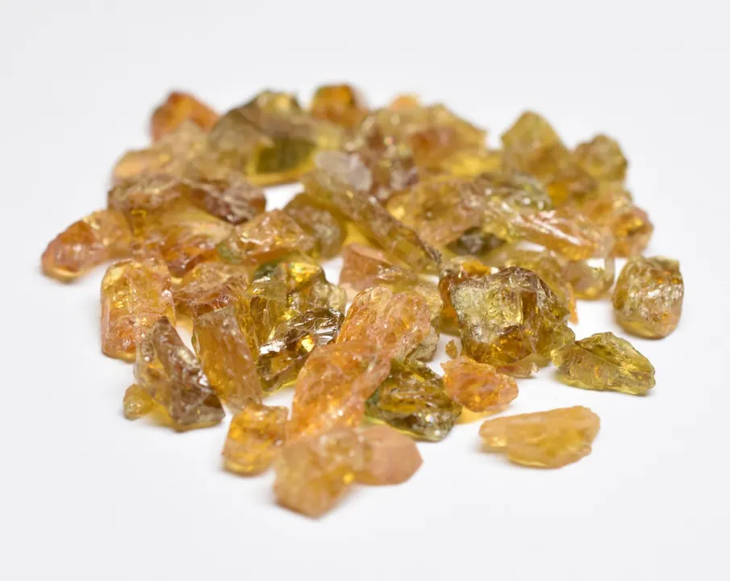

綠松石：天空之石
綠松石把天空的藍色鎖進石頭——古人說它是「藍天掉落人間的碎片」。

核心定義
綠松石（turquoise）是含水銅鋁磷酸鹽（CuAl₆(PO₄)₄(OH)₈·4H₂O），天藍色來自銅、綠色來自鐵。硬度 5–6、折射率 1.61–1.65、比重 2.6–2.8。名字源自法語「土耳其石」（Pierre turquoise）——它是經土耳其傳入歐洲的波斯寶石。
綠松石的藍是「天空藍」：最受歡迎的「波斯藍」（Robin's egg blue）濃豔純淨——它與「鐵線」（matrix，母岩脈絡）的搭配，是綠松石獨特的美學。綠松石是「十二月生辰石」，也是美洲原住民的聖石。
特徵與分類
| 質地 | 描述 | 市場 |
|---|---|---|
| 瓷松 | 瓷感緻密 | 最貴 |
| 硬松 | 緻密 | 中高 |
| 面松 | 疏鬆 | 需穩定處理 |
| 泡松 | 極疏鬆 | 多為仿品原料 |
綠松石的品質看「顏色＋質地」：濃豔天藍（瓷松）最貴、綠藍次之、綠色與黃綠較平。質地分：瓷松（瓷感、緻密）＞硬松＞面松（疏鬆）——疏鬆的面松必須「穩定化處理」（灌膠）才能做珠寶。
科學原理
綠松石是「多孔礦物」：結構疏鬆者吸水性強——未處理的疏鬆綠松石會吸水變色、褪色。所以市場常見「穩定化」：灌樹脂/蠟填孔——這是市場接受的處理（需揭露）；染色與再造（碎粉壓製）則需警惕。
鑑定：比重 2.6–2.8、折射率 1.61、看「鐵線」（天然母岩紋路）——仿品（染色菱鎂礦、玻璃、塑膠）的破綻：顏色呆板、無天然孔隙、比重異常。綠松石怕酸怕熱怕化妝品——「嬌貴的天空」。
鑑定與鑑別方法
- 看顏色：天然天藍自然 vs 染色呆板
- 查處理：穩定化（灌膠）需揭露
- 看鐵線：天然紋路 vs 仿品假紋
- 比重與折射率
- 證書確認：天然/處理/再造
市場行情與保養建議
行情：高品質「瓷松」（濃藍、無鐵線或美鐵線）每克可達數百人民幣；普通綠松石親民；穩定化綠松石是市場主流（平價耐久）。美國（亞利桑那）與中國（湖北）是兩大產地。
選購：先確認「天然未處理」還是「穩定化」——證書會標示；再談顏色與鐵線美感。綠松石的「藍」，是它的全部身價。
常見誤區
「波斯藍」確實最貴，但「綠松石」之名含綠——高品質綠藍也有行情。藍是主流審美，綠是名字的本義。
瓷松級（緻密）不需要穩定化——只有疏鬆的面松才灌膠。頂級瓷松是「天然原汁原味」。
冷知識
經土耳其傳入歐洲——法語「turquoise」就是「土耳其石」。它不產自土耳其，卻以土耳其為名。
疏鬆的綠松石吸水後顏色會變深——古人的「會呼吸的寶石」之說，其實是吸水的物理現象。
反直覺觀點
美國亞利桑那的「蜘蛛網綠松石」（細密鐵線）價值極高——鐵線從瑕疵變成美學，是綠松石市場的奇蹟。
波斯藍形容顏色，產地早已擴散到美國、中國——「波斯」是顏色形容詞，不是產地證明。